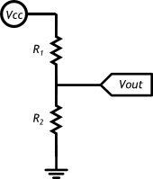

Расчёт пропорции
Сила тока, протекающая через резисторы одинакова, т.к. они соединены последовательно, и по закону Ома может быть рассчитана как:

По тому же закону Ома можно вычислить напряжение Vout, которое падает на резисторе R2:

Из полученной формулы видно, что чем больше R2 относительно R1, тем большее напряжение падает на нём.
Считывание резистивных сенсоров
Если вмето R2 использовать не постоянный резистор, а датчик, который меняет своё сопротивленивление, Vout будет зависеть от измеряемого значения.
Микроконтроллер умеет измерять напряжение. Таким образом, мы можем использовать свойства делителя напряжения для получения показаний от сенсора.
Примеры резистивных датчиков
Термистор
Термистор изменяет своё сопротивление в зависимости от собственной температуры
Фоторезистор

Фоторезистор (англ. Light Dependent Resistor или сокращённо LDR) изменяет своё сопротивление в зависимости от силы света, попадающего на его керамическую «змейку»
Потенциометр
Потенциометр ещё называют переменным резистором, триммером. Это делитель из двух резисторов в одном корпусе. Поэтому у него 3 ноги: питание, выход, земля.
Соотношение R1 и R2 меняется поворотом ручки. От 100% в пользу R1 до 100% в пользу R2.